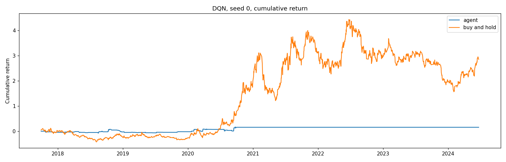
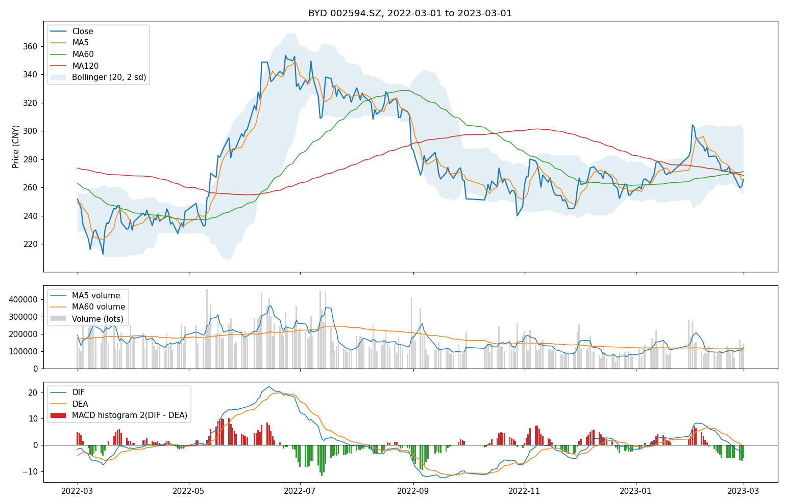

Deep Q-learning trading on BYD
Result. Across 10 random seeds, the agent never beat buy and hold over the 2017-2024 test period. Results ranged from -14% to +186% depending only on the seed. One lucky run would have looked like a working strategy.
The question
Can an agent learn to trade a single stock by trial and error, and does what it learns hold up across market phases and transaction-cost assumptions? Each day the agent sees recent market information, chooses to buy, hold or sell, and is rewarded by the next day's move.
My role
- Cleaned ten years of BYD price and financial data in Python.
- Engineered the model inputs: valuation (P/E), volatility and trading-volume features, plus moving averages, MACD, RSI, KDJ and Bollinger bands.
- Supported development of the reinforcement-learning trading agent and tested its robustness across market regimes and transaction-cost assumptions.
Setup
- Data: daily bars, 2011-06-30 to 2024-06-25.
- State: the last six daily returns.
- Actions: hold, buy with all cash in 100-share lots, or sell everything.
- Agent: DQN in PyTorch with experience replay and a target network.
- Costs: 0.03% commission each way (5 CNY minimum) and 0.1% stamp duty on sales.
- Split by time: train on the first 1500 trading days, backtest greedily on the remaining 1635.
Results (historical backtest, 2017-09 to 2024-06)
| Strategy | Median return | Worst seed | Best seed | Beat buy and hold | Median Sharpe | Median max DD |
|---|---|---|---|---|---|---|
| DQN | 29.6% | -14.0% | 185.5% | 0 / 10 | 0.39 | -28.9% |
| DQN + MA21 trend filter | 5.3% | -16.6% | 55.2% | 0 / 10 | 0.12 | -21.5% |
| Buy and hold | 285.6% | 0.68 | -52.8% |

- Seed variance dominates. With the same code and data, the outcome depended mostly on the random seed. A single run, as reported in 2024, says almost nothing about the method.
- The agent learns to sit in cash. With only six past returns as its state, and a small penalty for staying out, several seeds stop trading early.
- Lower drawdowns are not alpha. Drawdowns are smaller than buy and hold's only because the agent is mostly out of the market. Its median Sharpe is still lower.
What the 2026 review fixed
Re-reading my 2024 code turned up nine problems. Three of them changed the results:
- Indicators had been computed before the data was sorted by date. The data source returned rows out of order, so the agent's moving averages were off by 22 CNY on average.
- The reward function skipped returns between 3% and 5%, so the previous step's reward leaked into the next one.
- A failed download had written the API's error message into a data file, silently.
The rerun also replaces a paid data API with free BaoStock data, removes a hard-coded API token and seeds every run.
